So far you have written p5.js in the web editor. This guide moves the same setup onto your own computer. You write the code in VS Code. You save it to GitHub. GitHub gives you a web address you can open on your phone.
VS CodeYou write and test your sketch on your laptop.
→
GitHubYou push your code. GitHub stores every version and publishes the page.
→
Your phoneYou open the web address and the sketch runs there, where it can use the phone's sensors.
What you need
Your laptop, and permission to install software on it.
Your phone.
Your OCAD U email address.
How to use this guide
Work through the parts in order. The list on the left shows every part and every step. On a phone, tap Steps at the top.
Choose Mac or Windows at the top of the list. The guide then only shows the steps for your computer.
Click any screenshot to make it bigger.
Two workflows
Workflow
Where
When
1. Code to phone. GitHub, GitHub Desktop, VS Code and GitHub Pages. Clone the starter project, change it, push it, open it on your phone, and check it all works.
Parts 2 to 10
This is the one that matters. Finish it first.
2. Agents and models. Optional. Add models to the Chat in VS Code, learn its modes, and apply for student access.
Parts 11 to 13
I will show it in class, but we will not work through it together. Give it a try on your own between Tuesday and Thursday.
Optional tools. GitHub CLI and testing on your phone without publishing.
Parts 14 and 15
Later, if you want them.
Create your GitHub account
GitHub stores your code online and publishes your sketch as a web page. You also use this one account to sign in to VS Code and to Copilot.
About 10 minutes
Needs your phone
Sign up with your OCAD U email
If you already have a GitHub account, keep it. Add your OCAD U email to it in Settings, Emails and go to the next step.
Enter your OCAD U email address and a strong password.
Choose a username. Read the note below first.
GitHub emails you a code. Enter the code to verify your email.
github-signup.png. The sign-up form at github.com/signup. GitHub blocks automated browsers on this page, so it needs a manual capture.
Turn on two-factor authentication
Two-factor authentication (2FA) means GitHub asks for a code from your phone as well as your password. GitHub requires it for anyone who publishes code. The student benefits application also requires it. Set it up now so it never blocks you later.
The most reliable method is an authenticator app. If you already use one, such as Google Authenticator, Microsoft Authenticator, 1Password or the Passwords app on an iPhone, use that.
Open your authenticator app on your phone. Add a new account and scan the QR code.
Type the 6 digit code from the app into GitHub.
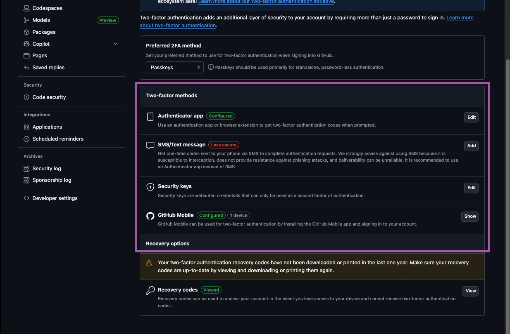
2025 captureThe two-factor section of your security settings. You need at least one method set up.
Save your recovery codes
Recovery codes are the only way back into your account if you lose your phone. GitHub will not let you finish until you save them.
Click Download. You get a small text file.
Keep the file somewhere that is not only your phone. Your OCAD U OneDrive or a password manager are good places.
Click I have saved my recovery codes.
Add the GitHub Mobile app
With the app installed, GitHub can send a notification to your phone and you tap to approve the sign-in. It is a useful second method. It can only be added after the authenticator app or SMS is set up.
You can sign in at github.com with your password and a code from your phone.
Your recovery codes are saved somewhere safe.
Install GitHub Desktop
GitHub Desktop is GitHub's own app for your computer. In this workflow it does one important job. When you sign in, it tells Git your name and email for you, so you do not have to type commands to do it later. It is also a clear place to see the history of a project when something goes wrong.
About 5 minutes
Check if you already have it
Look in your Applications folder for GitHub Desktop, or press Cmd + Space and type GitHub Desktop.
Open the Start menu and type GitHub Desktop.
If it is not there, go to the next step.
If it is there, open it and update it. On a Mac, use the GitHub Desktop menu, then About GitHub Desktop, then Check for Updates. On Windows, use Help, then About GitHub Desktop.
Then skip to step 4 and check the account and the name it is using.
On a Mac with an Intel chip, use the smaller link instead of the big button.
Open the downloaded zip file. It unpacks to GitHub Desktop.
Drag it into your Applications folder and open it from there.
Run the downloaded GitHubDesktopSetup file. It installs and opens by itself.
Sign in to GitHub
On the welcome screen, click Sign in to GitHub.com.
Your browser opens. Sign in if asked, check the username, and click Authorize desktop.
Your browser asks to open GitHub Desktop. Allow it.
desktop-welcome.png. The GitHub Desktop welcome screen with "Sign in to GitHub.com". Needs a first run of the app.
Let it set your name and email
Git writes a name and an email on every version you save. GitHub Desktop now offers to fill those in from your GitHub account.
On the Configure Git screen, leave Use my GitHub account name and email address selected.
Click Finish.
That is all GitHub Desktop needs to do for now. You can close it. VS Code and every other tool on your computer will use the same name and email.
If you already had GitHub Desktop
Open GitHub Desktop, then Settings.
Open File, then Options.
Under Accounts, check that it is signed in to the GitHub account you are using for this course.
Under Git, check the name and email. Fix them if they are from an old account, then click Save.
desktop-configure-git.png. The Configure Git screen with "Use my GitHub account name and email address" selected. Needs a first run of the app.
You are done with this part when
GitHub Desktop opens and shows your GitHub account.
Its Git settings show your name and email.
Install VS Code and sign in
Visual Studio Code is a free code editor. It is where you will write your sketches. Signing in with GitHub connects the editor to your account, so it can copy your projects down and push your changes up.
About 10 minutes
Already have VS Code? Start here
If VS Code is already on your computer, do not install it again. Bring it up to date and check three things. If you have never installed it, skip this step.
1. Update it
VS Code now updates every week, and a lot has changed in a year. Copilot used to be an extension. It is now built in. This guide needs version 1.125 or newer.
Open the Code menu and choose About Visual Studio Code to see your version.
Open the Code menu again and choose Check for Updates...
If it finds one, click Restart to Update.
Open the Help menu and choose About to see your version.
Open the Help menu again and choose Check for Updates...
If it finds one, click Restart to Update.
2. Check which account is signed in
Click the Accounts icon at the bottom left.
If it shows the GitHub username you want to use for this course, followed by (GitHub), you are signed in. You can skip steps 2 to 5 of this part.
If it shows a different account, such as an old GitHub account or a Microsoft account, click the account name, then Sign Out. Then sign in with the right one in step 3.
If it shows no account, carry on with step 3.
3. Look at your old extensions
Click the Extensions icon and look under Installed. Nothing here will break the setup, but some of it is no longer needed.
Used in last year's version of this course. Not needed now. Leave them or uninstall them.
p5.vscode
Disable it. It suggests p5.js 1 code, which clashes with p5.js 2.
GitHub Copilot, GitHub Copilot Chat
Now built in. After you update VS Code these look after themselves.
Live Server
Keep it. It is one of the two you need.
My VS Code is full of settings and extensions from other courses
You do not need to remove anything. VS Code has profiles. A profile is a separate set of extensions and settings. Make a clean one for this course and switch between them whenever you like.
Click the gear icon at the bottom left, then Profiles.
Create a new profile. Call it something like Atelier.
VS Code switches to it. It looks like a fresh install, and your old setup is untouched in the Default profile.
Use the large Windows or Mac button. You do not need the smaller links underneath.
Open the downloaded file. If it is a zip, double-click it to unpack it.
Drag Visual Studio Code into your Applications folder.
Open it from Applications. The first time, macOS asks if you are sure. Click Open.
Run the installer you downloaded. It is called something like VSCodeUserSetup-x64.exe.
Accept the agreement and keep clicking Next.
On the Select Additional Tasks screen, tick both Add "Open with Code" action boxes. Leave Add to PATH ticked.
Click Install, then Finish.
vscode-install-windows.png. The Windows installer's "Select Additional Tasks" screen with the "Open with Code" boxes ticked. Needs a Windows machine.
Open VS Code and sign in with GitHub
If this is a new install
The first time VS Code opens, it shows a welcome window that asks you to sign in.
Click Continue with GitHub.
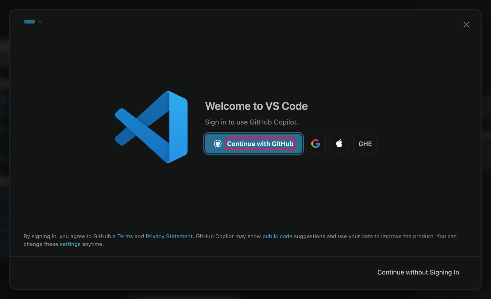
The first window you see. Choose GitHub, not Google or Apple, so everything in this course uses one account.
If you have used VS Code before, or you closed that window
You will not see the welcome window. There are two other ways to sign in. They do the same thing.
Click the blue Sign In button at the top right of the VS Code window.
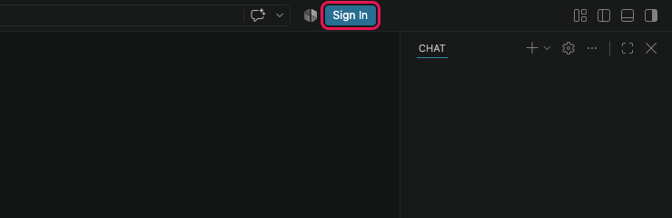
Or click the Accounts icon at the bottom left, then Sign in to use GitHub Copilot...
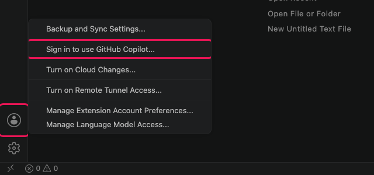
Either way you get this small window. Click Continue with GitHub.
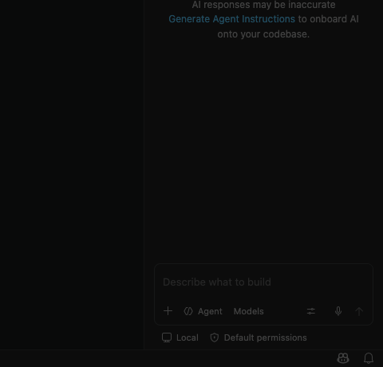
Approve it in your browser
VS Code opens your web browser to finish signing in.
If GitHub asks you to sign in, sign in. It may ask for your 2FA code.
Check that it shows your username, then click Continue.
If GitHub shows a list of permissions, click Authorize Visual-Studio-Code.
Your browser asks to open Visual Studio Code. Click Open.
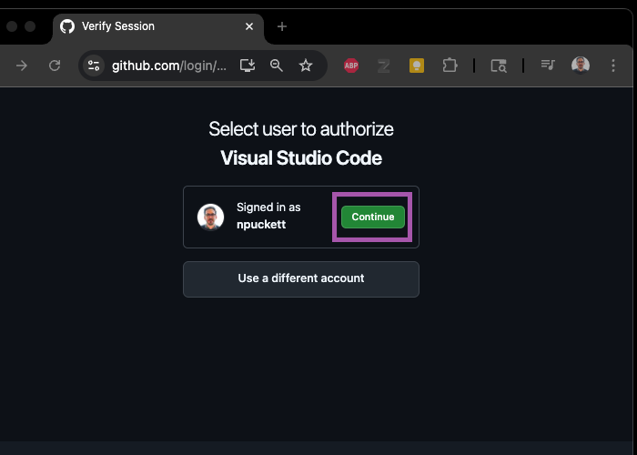
2025 captureGitHub asks which account to connect. Check the username before you continue.
Pick a theme and get started
On a new install, the welcome window now asks what it should look like. If you have used VS Code before, you will not see this. Skip to the next step.
Pick any colour theme. You can change it later.
Click Get Started.
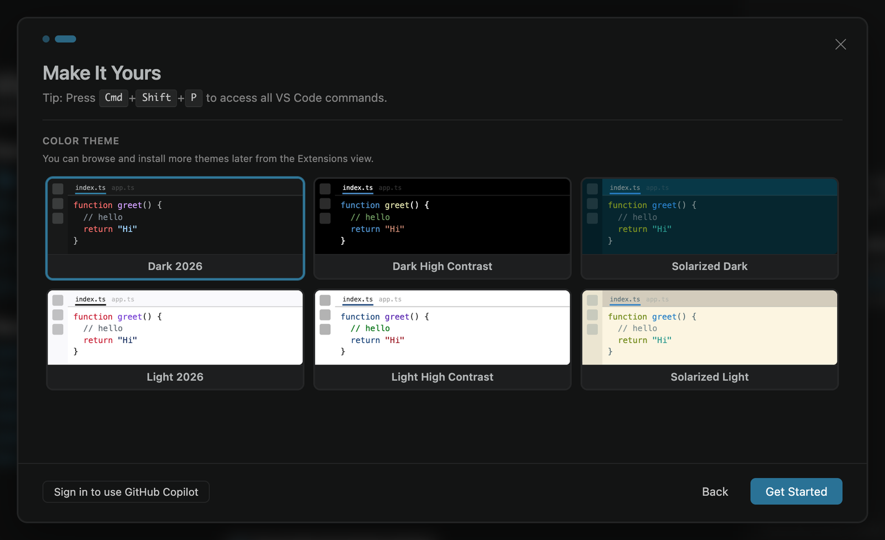
The screenshots in this guide use the dark theme. A light theme works the same way.
Find your way around
You will use six places in the VS Code window. Find each one now.
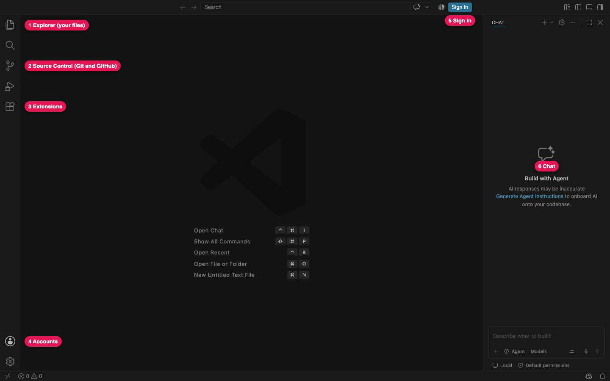
The icons down the left edge are called the Activity Bar.
1 Explorer
The files in your project.
2 Source Control
Saves versions of your work and sends them to GitHub.
3 Extensions
Add-ons for VS Code. You install two in part 6.
4 Accounts
Shows which GitHub account is signed in.
5 Sign In
Only shows while you are signed out.
6 Chat
GitHub Copilot. Part 12 covers it. Close it with the X if you want more room.
Two shortcuts worth learning today
Cmd + Shift + P opens the Command Palette. Type what you want to do and VS Code finds the command.
Ctrl + ` opens the Terminal at the bottom of the window. The ` key is above Tab.
Ctrl + Shift + P opens the Command Palette. Type what you want to do and VS Code finds the command.
Ctrl + ` opens the Terminal at the bottom of the window. The ` key is above Tab.
Check you are signed in
Click the Accounts icon at the bottom left.
You should see your GitHub username with (GitHub) after it.
The blue Sign In button at the top right should be gone.
signin-accounts-signed-in.png. The Accounts menu after signing in, showing "username (GitHub)" at the top. Needs a signed-in VS Code.
You are done with this part when
VS Code opens from your Applications folder or Start menu.
The Accounts menu shows your GitHub username.
Install Git
Git is the program that records versions of your files. GitHub is the website that stores them online. VS Code uses Git behind its buttons, but Git does not come with VS Code. GitHub Desktop has its own private copy that VS Code cannot use. So you install Git once, for everything.
5 to 15 minutes
Uses the Terminal, briefly
Check if you already have Git
In VS Code, open the Terminal. Use the menu Terminal, then New Terminal.
Type this and press Enter.
git --version
If it answers with a version number, such as git version 2.50.1, you have Git. Skip the next step.
Install Git
On a Mac, Git comes with Apple's Command Line Developer Tools. When you ran git --version, macOS should have offered to install them.
In the window that appeared, click Install, then Agree.
Wait. The download is large and can take 5 to 15 minutes.
When it finishes, close the Terminal panel in VS Code and open a new one.
Run git --version again. You should now see a version number.
If no window appeared, run this command to ask for the tools.
xcode-select --install
git-mac-tools.png. The macOS window that offers to install the command line developer tools. Only appears on a Mac that does not have them yet.
Run the installer. It asks many questions. Keep every default and click Next each time.
One exception. When it asks for the default editor, choose Use Visual Studio Code as Git's default editor.
When it finishes, close VS Code completely and open it again.
Open a new Terminal and run git --version. You should now see a version number.
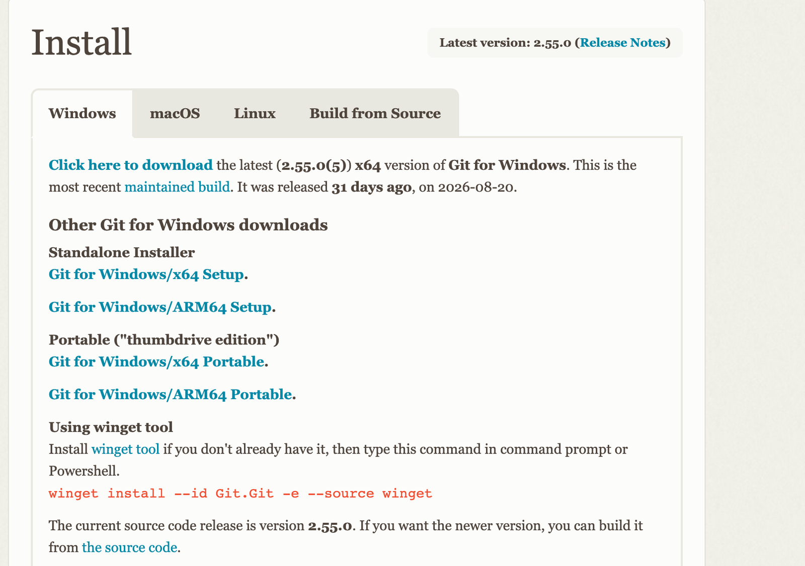
Use the first link, Click here to download.
Check Git knows who you are
Git writes your name and email on every version you save, and refuses to save anything without them. GitHub Desktop set them for you in part 3. Check that it worked.
Run this in the Terminal.
git config --global --list
Look for two lines that start with user.name= and user.email=. If both are there, you are done.
One or both are missing
The simplest fix is in GitHub Desktop. Open its settings, choose Git, fill in your name and email, and click Save. On a Mac the settings are under the GitHub Desktop menu. On Windows they are under File, then Options.
Or set them with two commands. Change the name and the email inside the quotes to your own. Use the same email as your GitHub account.
git config --global user.name "Your Name"
git config --global user.email "you@ocadu.ca"
You are done with this part when
git --version prints a version number.
git config --global --list shows your name and email.
Add two extensions
Extensions add features to VS Code. A few years ago a setup like this needed a long list of them. Now most of what you need is built in, including Git, GitHub sign-in and Copilot. You add two.
About 5 minutes
Extension
By
What it does
p5.js 2.x Project Generator
IrtizaNasar
Code suggestions for p5.js 2. It is the one the p5.js website recommends.
Live Server
Ritwick Dey
Runs your sketch in a browser and reloads it every time you save.
Install p5.js 2.x Project Generator
Click the Extensions icon in the Activity Bar. It looks like four squares.
In the search box, type p5.js 2.x Project Generator.
Find the one by IrtizaNasar. Click its blue Install button.
If VS Code asks whether you trust the publisher, click Trust Publisher & Install.
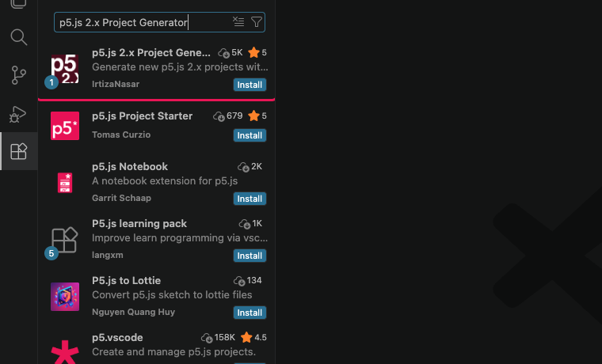
Check the author name under the title. Several extensions have similar names.
Install Live Server
In the Extensions search box, type Live Server.
Find the one by Ritwick Dey. It has tens of millions of installs.
If it shows a gear icon instead of Install, you already have it.
If not, click Install.
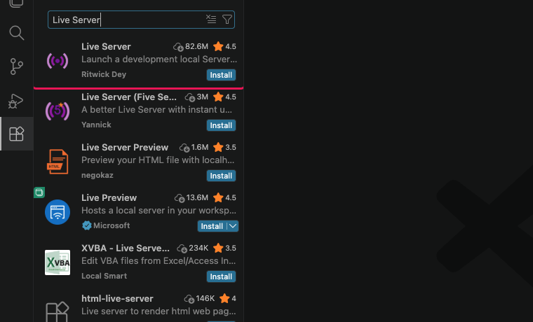
Live Server by Ritwick Dey is the first result. The others are different tools.
Check your list
In the Extensions search box, type @installed.
You should see both. Extensions you had before will be listed too.
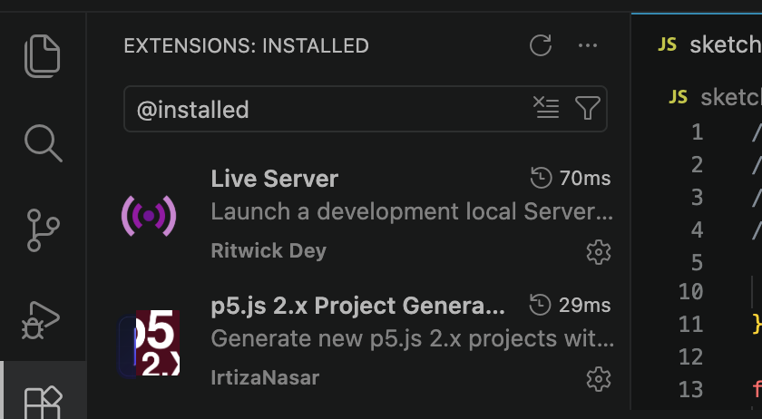
Typing @installed in the search box shows only what you have.Install both from the Terminal instead
This does the same thing as the steps above. Paste it into the Terminal in VS Code and press Enter.
The starter is the same setup you know from the web editor. An index.html that links p5.js and p5-phone, and a blank sketch.js with only setup() and draw(). You make your own copy on GitHub, switch on its web page, then bring it down to your laptop.
About 10 minutes
Make your own copy of the template
Make sure you are signed in to github.com in your browser.
Click the green Use this template button, then Create a new repository.
Under Owner, choose your own account.
Type a Repository name. Keep it short, lowercase, with hyphens instead of spaces. For example my-phone-sketch.
Leave it set to Public. Leave Include all branches off, and ignore the Copilot box at the bottom.
Click Create repository.
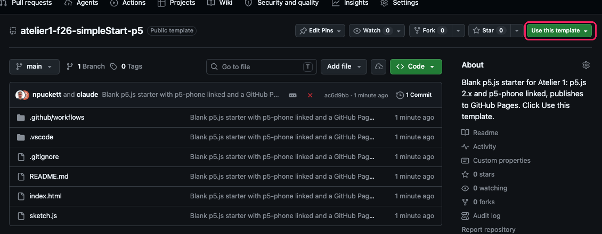
The button only shows when you are signed in to GitHub.
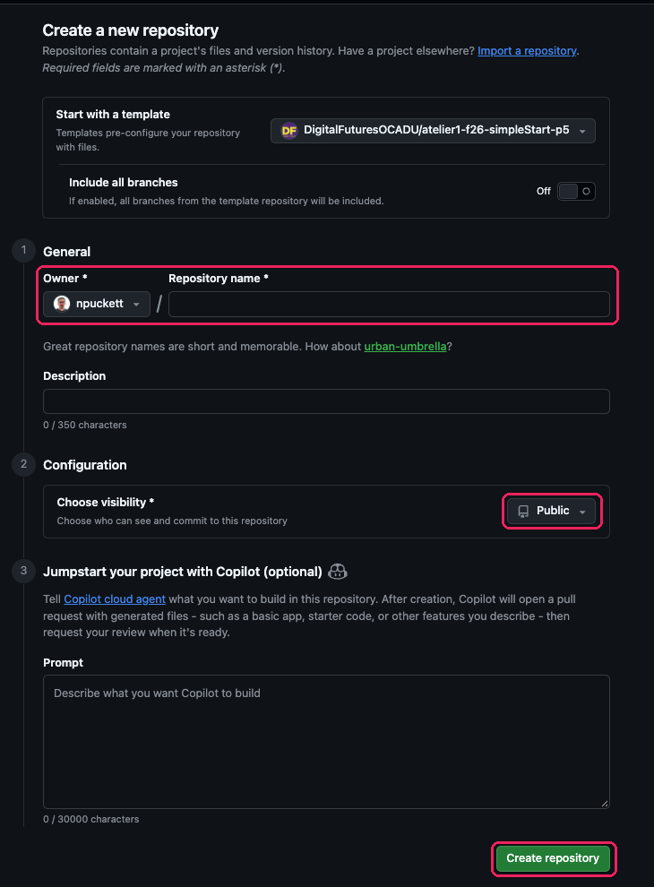
Three things matter: the owner and name, Public, and Create repository. Leave everything else as it is.
Switch on GitHub Pages
GitHub Pages is the free web hosting that comes with GitHub. The template already contains the instructions for publishing. You only need to flip the switch. You do this once for each new repo.
In your new repo, click Settings in the row of tabs at the top.
Click Pages in the list on the left.
Under Build and deployment, open the Source menu and choose GitHub Actions.
That is all. Do not click either Configure button that appears below.
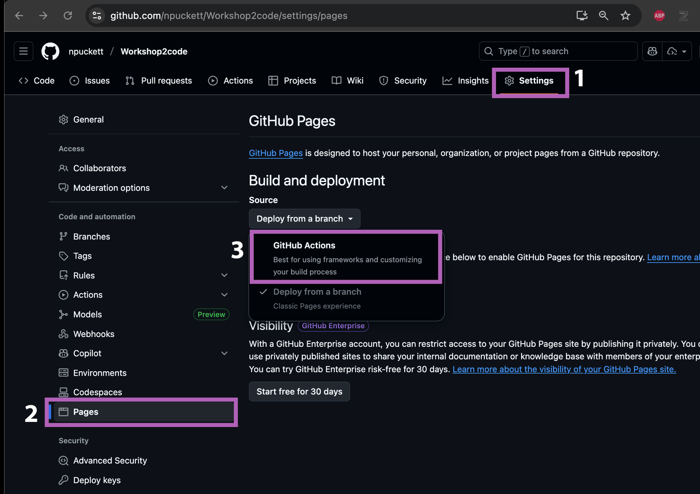
2025 capture1 Settings. 2 Pages. 3 Set Source to GitHub Actions.
Clone it to your laptop
There are two ways to do this. They give exactly the same result, a folder on your laptop that stays connected to GitHub. Use whichever you know. If you learned Git with GitHub Desktop, use option B.
Option A: clone in VS Code
In VS Code, click the Source Control icon in the Activity Bar.
Click Clone Repository.
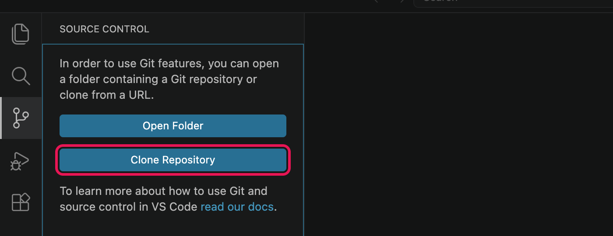
If you do not see these buttons, a folder is already open. Use File, then New Window.
At the top of the window, click Clone from GitHub.
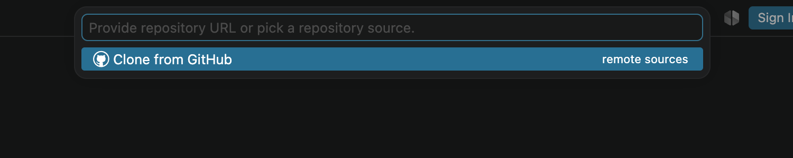
If VS Code says The extension 'GitHub' wants to sign in using GitHub, click Allow and approve it in your browser, as you did before.
A list of your repos appears. Choose the one you just made. It looks like your-username/my-phone-sketch.
Choose where to keep it. Select your Documents/GitHub folder. Make it first if it does not exist. Click Select as Repository Destination.
When VS Code asks Would you like to open the cloned repository?, click Open.
clone-pick-repo.png. The list of your GitHub repos that appears after choosing Clone from GitHub. Needs a signed-in VS Code.
Option B: clone with GitHub Desktop
On your repo's page on github.com, click the green Code button, then Open with GitHub Desktop. Your browser asks to open GitHub Desktop. Allow it.
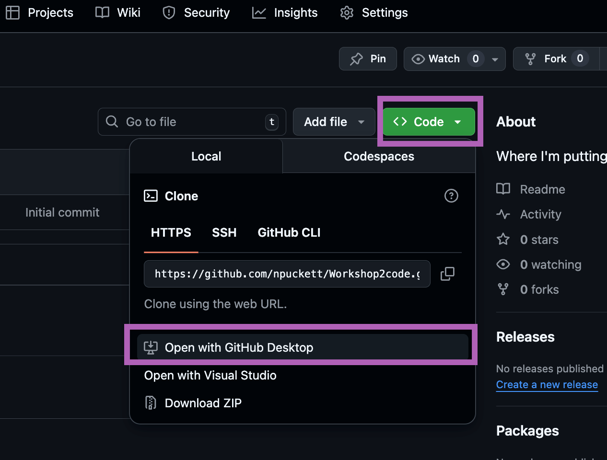
2025 captureYou can also start inside GitHub Desktop with File, then Clone Repository, and pick the repo from the GitHub.com tab.
GitHub Desktop opens a Clone a Repository window. Check the Local Path. It should end in Documents/GitHub/ followed by your repo's name. Use Choose... if it does not.
Click Clone.
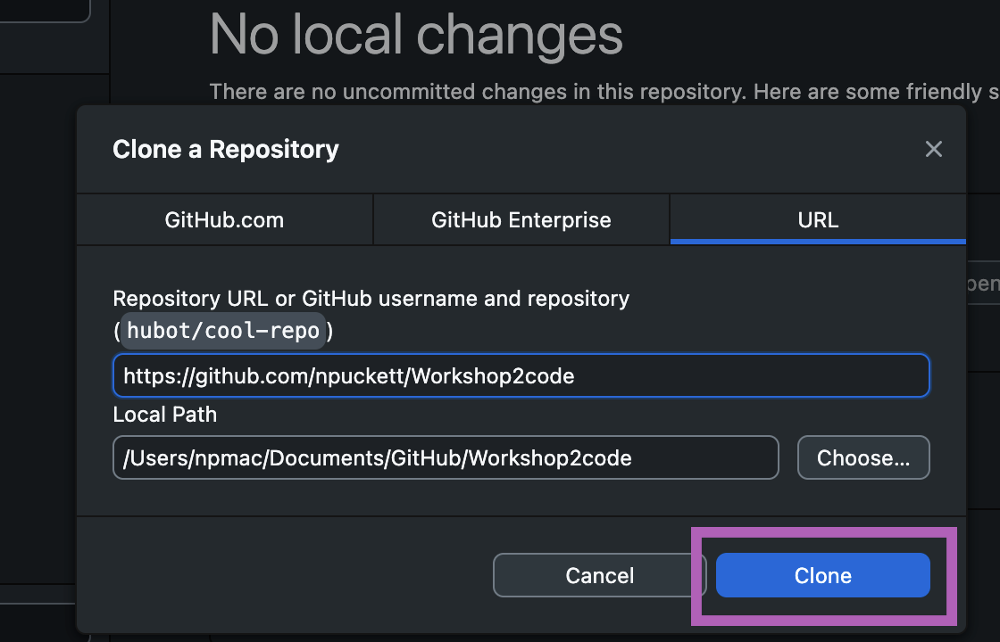
2025 captureThe Local Path is where the project will live on your laptop.
Now open that folder in VS Code. In GitHub Desktop, use the Repository menu, then Open in Visual Studio Code. Or in VS Code, use File, then Open Folder, and choose the folder inside Documents/GitHub.
From here on the guide uses VS Code to commit and sync. GitHub Desktop can do both as well, and you can mix them. They are two windows onto the same folder.
Trust the folder
VS Code is careful with folders it has not seen before. Until you say you trust a folder, it opens in Restricted Mode, where Git and your extensions are switched off. This is your own project, so trust it.
If VS Code asks Do you trust the authors of the files in this folder?, click Yes, I trust the authors. You are done.
If you see a bar across the top that says Restricted Mode instead, click Manage in that bar.
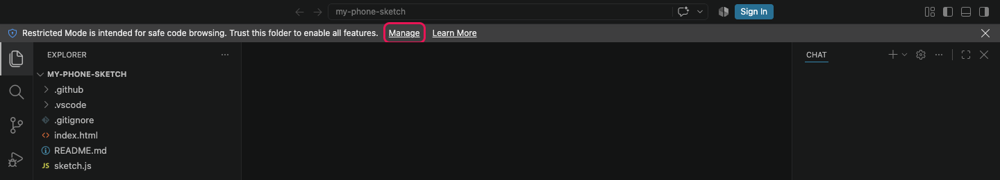
Click Trust.
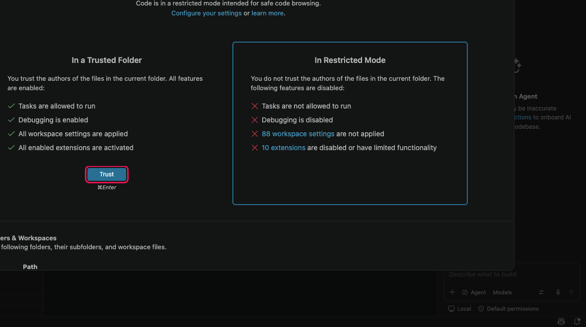
You can tell it worked when the bar is gone and the bottom left corner shows a branch name, usually main.
Accept the recommended extensions
If you skipped part 6, VS Code shows a message at the bottom right: Do you want to install the recommended extensions from Ritwick Dey and IrtizaNasar for this repository?
Click Install. VS Code installs both.
The message hides itself after a few seconds. To get it back, click the bell at the right end of the bottom bar.
If there is no message at all, you already have both extensions.
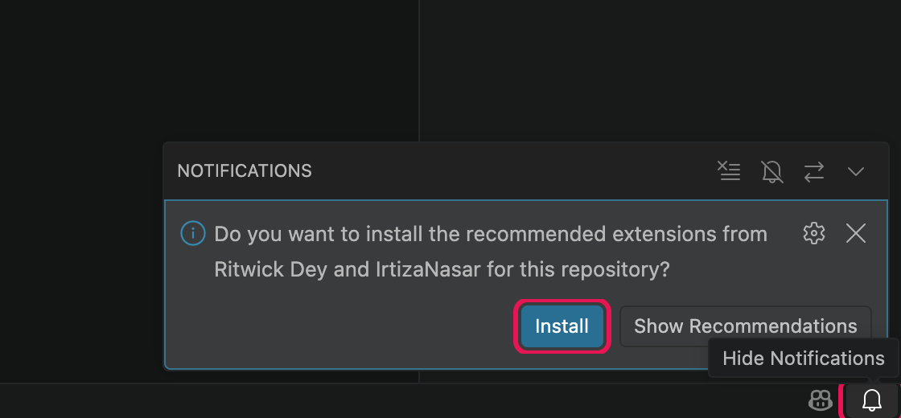
The starter project lists the two extensions it needs, so VS Code can offer them.
Look at what you have
Click the Explorer icon at the top of the Activity Bar.
Click sketch.js to open it. Then click index.html.
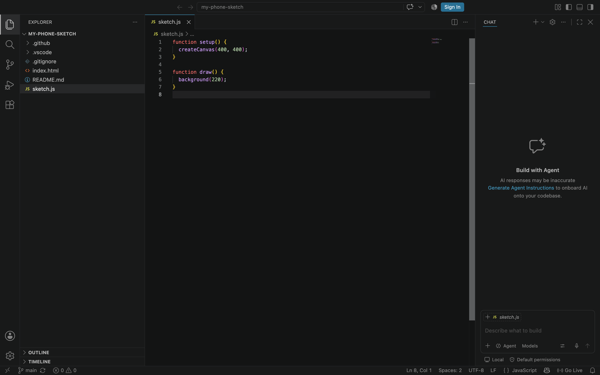
The same two files you know from the web editor. Ignore the folders that start with a dot for now.
index.html
The web page. It links p5.js, p5-phone and your sketch.
sketch.js
Your sketch. It starts blank, as in the web editor. This is the file you will change.
README.md
The description shown on the repo's GitHub page.
.github
The publishing instructions for GitHub Pages. Leave it alone.
.vscode
The list of recommended extensions. Leave it alone.
You are done with this part when
Your repo exists at github.com/your-username/your-repo-name.
Its Pages setting says the source is GitHub Actions.
The project is in your Documents/GitHub folder, it is open in VS Code, and you can see sketch.js.
Run it on your laptop
The web editor had a play button. Here, Live Server does that job. It opens your sketch in a browser and reloads it every time you save.
About 5 minutes
Start Live Server
In the Explorer, right-click index.html.
Choose Open with Live Server.
Your browser opens at an address like 127.0.0.1:5500.
You should see a grey square on a dark page. That is the blank canvas, the same as a new sketch in the web editor.
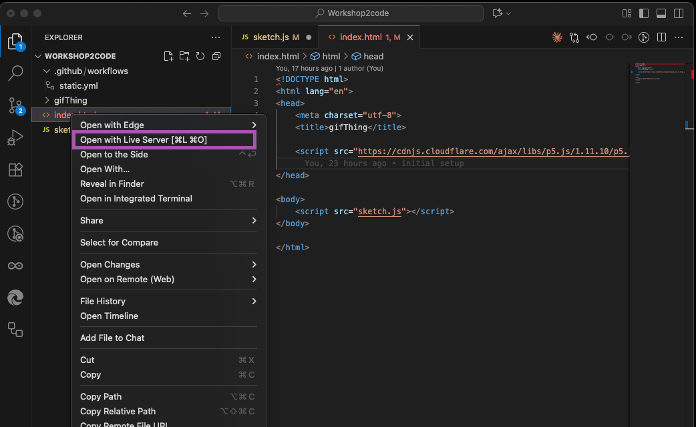
2025 captureRight-click index.html, then Open with Live Server.
You can also click Go Live at the right end of the bar along the bottom of the window. While it is running, that button shows Port: 5500. Click it again to stop.
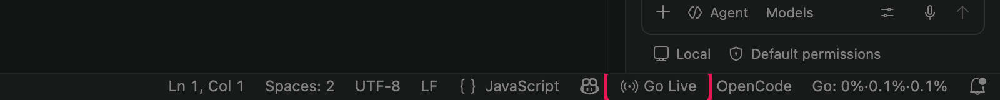
Go Live sits at the right end of the bottom bar.
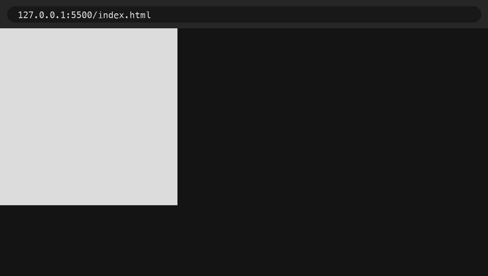
The blank starter sketch. A 400 by 400 grey canvas, exactly like a new sketch in the web editor.
Open the browser console
In the web editor, errors and print() messages appeared below your code. Now they appear in the browser's console.
In Chrome, press Cmd + Option + J.
In Chrome, press Ctrl + Shift + J.
Or use the menu. Click the three dots at the top right of Chrome, then More Tools, then Developer Tools, and choose the Console tab.
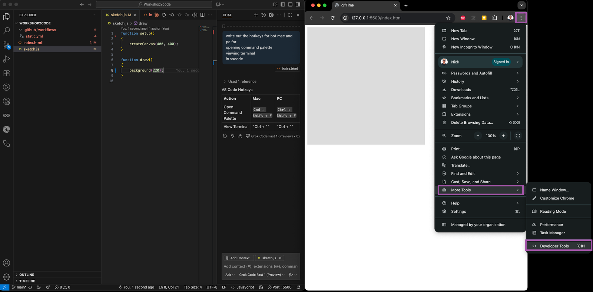
2025 captureThe menu route to the Developer Tools.
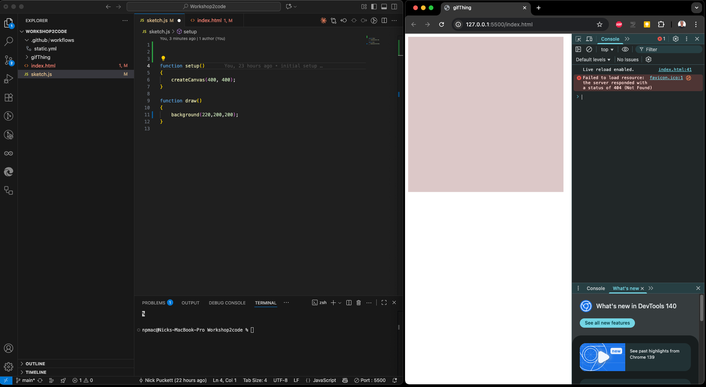
2025 captureA good working layout. Code on one side, the sketch and its console on the other.
Change something and save
In sketch.js, find the line background(220);
Change it to a colour. For example background(237, 34, 93);
Save with Cmd + S on a Mac or Ctrl + S on Windows.
Look at the browser. The page reloads and the square changes colour.
You are done with this part when
The sketch runs in your browser from VS Code.
Saving a change reloads the page.
You can find the console.
Publish it to your phone
There is no Save As here, and no sketch-final-v3.js. You save a version with a short message. That is a commit. Then you send your commits to GitHub. That is a push. Each push publishes your page again.
About 10 minutes
Needs your phone
Commit your change
Click the Source Control icon. It shows a number, which is how many files have changed.
Under Changes you see sketch.js. Click it if you want to see exactly what changed.
Type a short message in the box that describes the change. For example Change the background colour.
Click Commit.
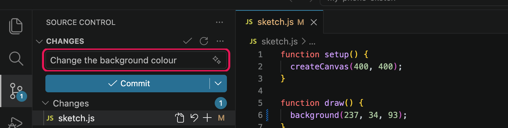
Write the message for yourself in three weeks. Say what changed.
The first time, VS Code asks about staging. Click Always. It will then include all your changes every time without asking.
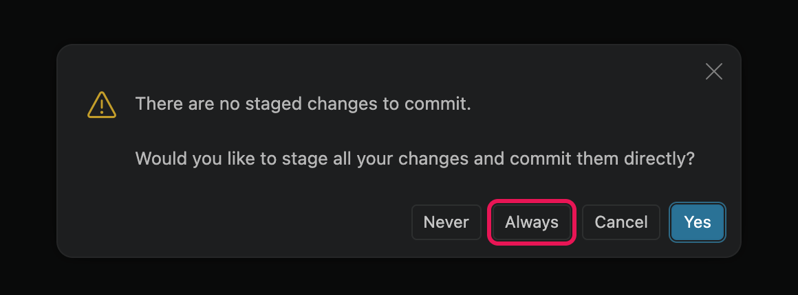
Sync with GitHub
The commit is saved on your laptop only. The button now reads Sync Changes with a small number and an up arrow. That is how many commits are waiting to go up.
Click Sync Changes.
The first time, VS Code explains that this will pull and push. Click OK. To skip this message in future, click OK, Don't Show Again instead.
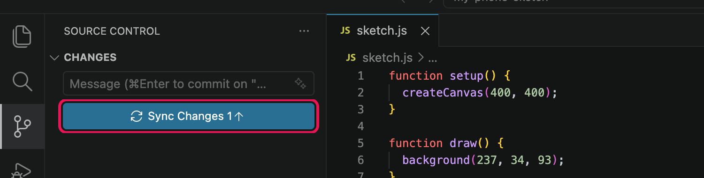
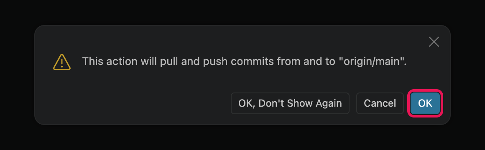
Watch it publish
Open your repo on github.com and click the Actions tab.
The top row is the run your push just started. A yellow dot means it is working.
Wait for a green tick. It usually takes under a minute.
actions-run-green.png. The repo's Actions tab with the first failed run (red X) below a successful run (green tick).
Find your web address
Every repo published with Pages gets an address in this pattern.
https://YOUR-USERNAME.github.io/YOUR-REPO-NAME/
To see yours, go to Settings, then Pages in your repo. The address is at the top with a Visit site button.
Open it on your laptop first to check it works.
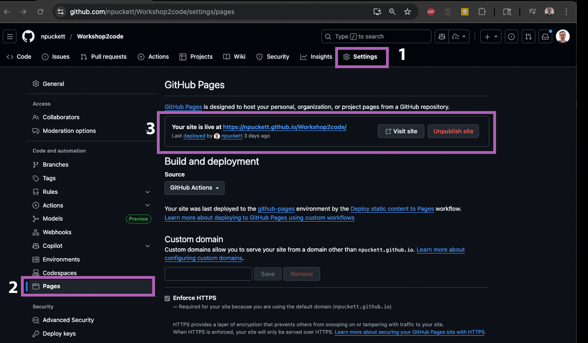
2025 captureSettings, then Pages, shows the live address.
Open it on your phone
Typing a long address on a phone is slow. Chrome can make a QR code for any page.
With your page open in Chrome on your laptop, click the three dots at the top right.
Choose Cast, save, and share, then Create QR Code.
Point your phone's camera at the code and tap the link.
You should see the same sketch you saw on your laptop, with your change in it.
Add the page to your phone's home screen or bookmarks. The address never changes, so you only do this once per project.
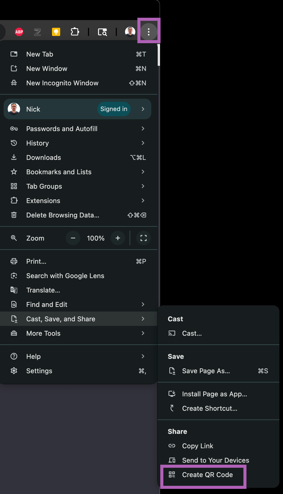
2025 captureChrome's built-in QR code maker.
The loop from now on
This is the whole cycle. You will do it many times a day.
Change your code and save. Check it in the browser on your laptop.
When something works, commit with a message.
Sync to push it to GitHub.
Wait about a minute and refresh the page on your phone.
Workflow 1 is working when
Your sketch runs on your phone from your github.io address.
A change you make on your laptop shows up on your phone after commit and sync.
How do I know everything is set up?
Four ways to find out, from the quickest to the most thorough. If you set things up a while ago, or you already had VS Code, start here. Each check that fails points you to the part that fixes it.
5 to 10 minutes
The real test: laptop to phone
If this works, workflow 1 is right, whatever else is going on. It uses every piece once.
Open your project in VS Code. Change a colour or a size in sketch.js and save.
In Source Control, type a message and click Commit, then Sync Changes.
Wait a minute. Open your github.io address on your phone and refresh.
Copilot can run the checks for you and explain the results. Open your project in VS Code. Set the Chat to Agent and paste this. It asks permission before each command. None of them change anything.
Check my setup for this course. Run these commands in the terminal one at a time: git --version, git config --global user.name, git config --global user.email, git remote -v, git status -sb, code --version, code --list-extensions, gh auth status. Do not change or install anything. Then give me a short checklist in plain language of what passed and what is missing. I need Git installed, a git name and email set, VS Code 1.125 or newer, a GitHub remote on this folder, and these two extensions: Irti.p5js-project-generator and ritwickdey.LiveServer. The extension ltmoerdani.opencode-copilot-chat and the gh command are optional, so report them but do not count them as failures.
Run the check script
One command that inspects your computer and prints a report. It only reads. It never installs or changes anything. It needs Node.js, which you will also need later in the course.
Open your project in VS Code and open the Terminal.
See if you have Node.js. Run node --version. A version number means yes.
If not, install the LTS version from nodejs.org, then close VS Code and open it again.
Run the check.
npx ocadu-vscode-setup@2
On Windows, type npx.cmd, not npx. The VS Code Terminal on Windows is PowerShell, and PowerShell blocks plain npx with an error that says running scripts is disabled on this system.
npx.cmd ocadu-vscode-setup@2
The first time, it asks Ok to proceed? Press Enter. The report looks like this.
Git
✓ git version 2.50.1
✓ Name: Sam Student
✗ Git does not know your email MUST
Run: git config --global user.email "you@ocadu.ca"
Extensions
✓ Live Server
! p5.js 2.x Project Generator is not installed SHOULD
This folder
✓ Connected to GitHub: sam-student/my-phone-sketch
✓ Publish workflow: static.yml
· Your page: https://sam-student.github.io/my-phone-sketch/
MUST
The core setup will not work until this is fixed. Each one prints the fix and a link to the step in this guide.
SHOULD
Recommended. Things mostly work without it.
LATER
Optional, or only needed for the later parts.
If you have the GitHub CLI signed in, the script also asks GitHub whether Pages is switched on for your repo.
Add models to the Chat
VS Code has a Chat built in. An extension can plug other models into it. This part installs that extension and connects it to OpenCode Go, a subscription that gives one key access to a set of strong open coding models. You choose the model yourself, and these requests do not use your Copilot credits.
Optional
About 15 minutes
Go costs 10 US dollars a month
How it works: all you need is a key
Three pieces connect. The Chat is already in VS Code. An extension teaches the Chat how to talk to OpenCode. An API key proves the requests are yours.
An API key is a long code that starts with sk-. For Go models it is the only thing a tool needs. There is no sign-in inside VS Code. You paste the key once and the models appear.
Anyone who has your key can use your account. Their requests count against your subscription. Treat a key like a password. Never put it in your code, a commit, a screenshot or a chat message.
Make one key for each place you use it. One called vscode, another for OpenCode later. If one leaks, you delete that one and nothing else breaks.
You can share on purpose. If you and a collaborator want to share one subscription, make a separate key, name it after them, and give it to them privately. Their use comes out of the same limits as yours. Delete the key when the project ends.
A lost key cannot be shown again. Delete it and make a new one. It takes ten seconds.
Install the OpenCode for Copilot Chat extension
Click the Extensions icon in the Activity Bar.
In the search box, type OpenCode for Copilot Chat.
Find the one by Laksmana Tri Moerdani. Click Install.
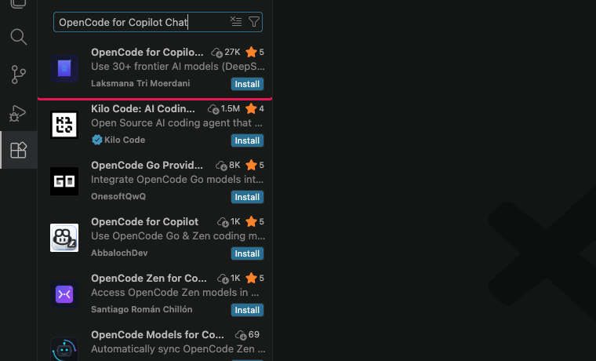
Check the author name. Several extensions have similar names.
GitHub asks you to authorize OpenCode. Check the username and approve.
The OpenCode Console opens. It has a row of tabs along the top. You will use Go and Keys.
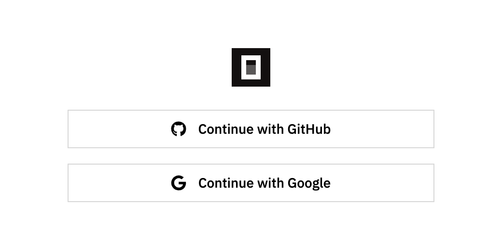
Use GitHub, so this is one less password to keep track of.
Subscribe to Go
In the OpenCode Console, click the Go tab.
Subscribe. It is 10 US dollars a month, paid by card.
When you are subscribed, the Go tab shows three usage bars. Go has limits that reset every five hours, every week and every month. This is where you see how much you have used.
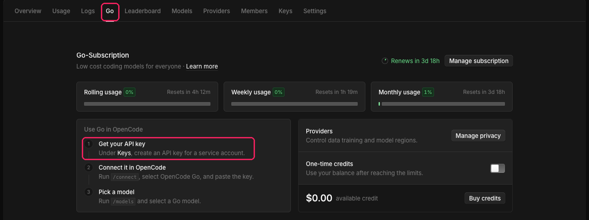
The Go tab once you are subscribed. It points you to Keys for the next step.
opencode.ai/go lists the models and limits that come with the subscription.
opencode-go-subscribe.png. The Go tab for an account that has not subscribed yet, showing the subscribe button. Needs an account without Go.
Make an API key
Click the Keys tab.
Under Service Accounts there is one entry with your email address. Click it.
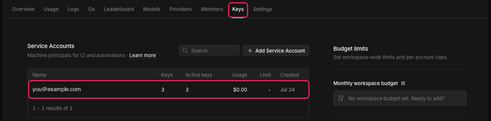
A service account is a holder for keys. You get one automatically.
Click Add API Key.
Name it after where you will use it. Type vscode.
Copy the key when it is shown. Keep the page open until you have pasted it into VS Code in the next step.
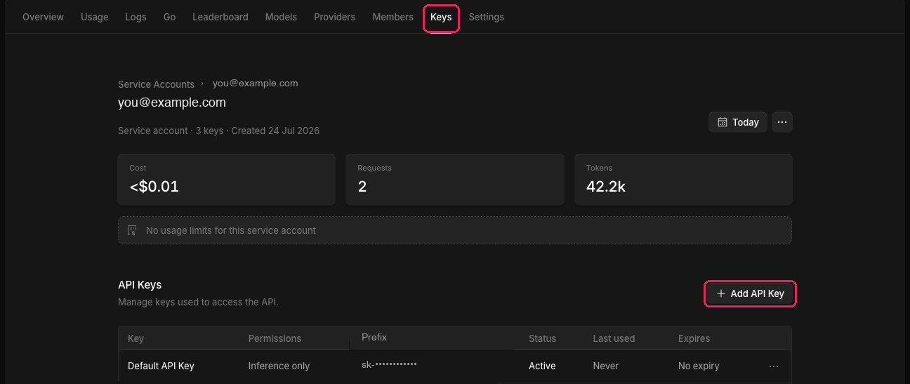
Each key has a name, so you can tell them apart and delete one without touching the others.
opencode-key-created.png. The window that appears after Add API Key, with the name field filled in as "vscode". Capture it before the key is shown, or with the key painted out.
Add OpenCode Go in VS Code
Open the Command Palette. Type Chat: Manage Language Models and press Enter. You can also get here from the model menu under the chat box, with Manage Models...
Click Add Models.
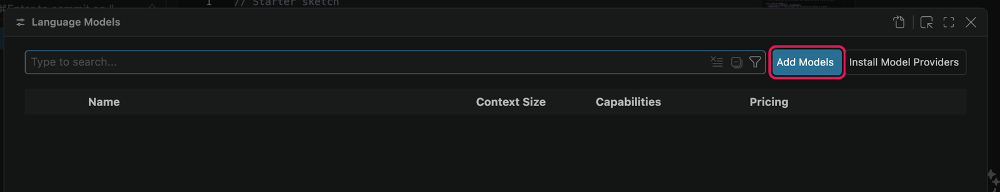
Choose OpenCode Go from the list. It is there because of the extension you installed in step 2. Do not choose OpenCode Zen.
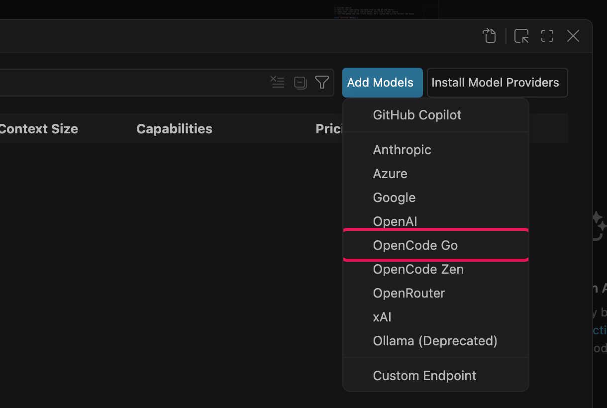
VS Code asks for a name for this group of models. Press Enter to accept OpenCode Go.
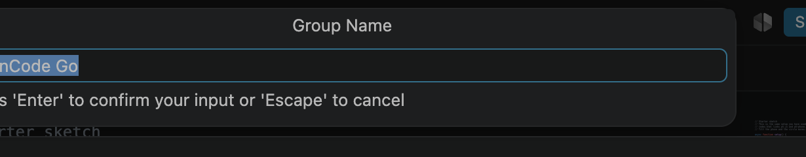
Paste your key and press Enter. It shows as dots.
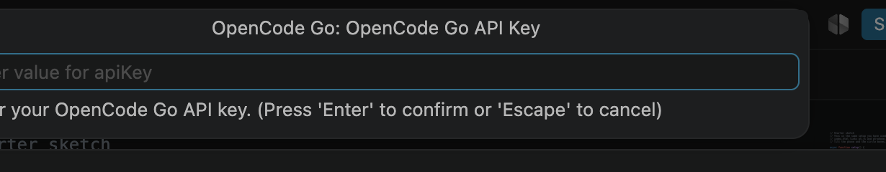
Tick the models you want to see in the Chat, then confirm.
models-go-select.png. The list of OpenCode Go models with tick boxes.
Find the models in the Chat
Open the Chat. It is the panel on the right side of VS Code. If it is closed, press Ctrl + Cmd + I on a Mac or Ctrl + Alt + I on Windows.
Click the model menu under the chat box.
The models you ticked are listed under OpenCode Go.
If one is missing, go back to Manage Models... and click the eye icon beside it to show it.
models-picker-go.png. The model menu open in the Chat with the OpenCode Go models listed.
Send a test message
Seeing a model in the list only proves that your key was accepted. Check that it answers.
Choose one of the OpenCode Go models.
Set the mode to Ask, type Say hello in five words and press Enter.
You get
It means
A reply
It works. These models also work in Agent mode.
An error about an invalid or missing key
Make a new key and repeat step 6.
An error that mentions the free tier
You added OpenCode Zen instead of OpenCode Go. Remove it in Manage Models... and add Go.
An error about a usage limit
You have reached one of Go's limits. The Go tab of the OpenCode Console shows when it resets.
models-go-test.png. The Chat showing a reply from an OpenCode Go model.
Why should I pay for models if I can use free ones?
You have free options. Copilot gives you a monthly allowance, and OpenCode has free models inside its own app. Free models can handle many tasks, and it is possible to complete the work in this course that way. There are trade-offs.
A much smaller selection. Free lists are short and change without notice. The most capable free model on OpenCode right now is Muse Spark 1.3. Copilot's free and student plans pick the model for you.
Slower and less reliable. Free models are shared by everyone. Expect slow replies at busy times, daily limits, and sometimes no access at all.
Limited in where they run. OpenCode's free models only answer inside the OpenCode app.
Your prompts may be used for training. Several free models say so in their terms. Do not send them anything private.
You can combine them. A workflow does not need one model for everything. Use a free or cheap model for small edits and explanations, and save a stronger one for planning and for the problems the cheap one could not solve.
Use Copilot Chat in VS Code
The Chat is built into VS Code, and GitHub Copilot powers it. There is nothing to install. Because you signed in with GitHub, you are already on the free plan. If you added OpenCode Go models in the last part, you can use those here too.
Optional
About 10 minutes
Open the Chat
The Chat panel sits on the right side of the window. If you closed it, open it again.
Press Ctrl + Cmd + I, or click the chat icon next to the search box at the top of the window.
Press Ctrl + Alt + I, or click the chat icon next to the search box at the top of the window.
copilot-chat-signed-in.png. The Chat panel when signed in, showing the input box with the agent picker and the model picker.
Know the three modes
The first menu under the chat box sets how much the chat is allowed to do.
Ask
Answers questions. It does not change your files. Start here.
Plan
Writes a step by step plan for a change and waits for you to approve it.
Agent
Edits files and runs commands to get a task done. It asks before it runs anything.
copilot-modes.png. The agent picker open, showing Agent, Ask and Plan. Needs a signed-in VS Code.
Try Ask
Open sketch.js so the chat can see it.
Set the mode to Ask.
Type a question and press Enter. For example:
Explain what setup and draw do in this sketch, and how often each one runs. Use plain language.
Try Agent, and read what it changed
Set the mode to Agent.
Ask for one small change. For example:
In sketch.js, draw a circle that follows the mouse. Change as little as possible.
The changed lines are marked in the editor. Green lines were added. Red lines were removed. Read them.
Check the result in your browser.
Click Keep if it is what you wanted, or Undo if it is not.
copilot-keep-undo.png. An agent edit in sketch.js showing green and red lines with the Keep and Undo buttons.
Know the limits of the free plan
Copilot Free gives you 2,000 code suggestions a month and a small monthly allowance of AI Credits for Chat and Agent.
Agent mode uses credits much faster than Ask, because it reads files and works in many steps.
The free and student plans choose the model for you. The model menu shows Auto.
When the credits run out, the Chat stops until next month. Code suggestions as you type keep working.
Part 11 adds other models with your own key. Part 13 gets you the student plan and explains exactly what it includes.
Get GitHub student access
Verified students get GitHub Education benefits for free. That includes the GitHub Copilot Student plan. Approval takes a few days, so apply early.
Optional
About 15 minutes, then a wait of a few days
Needs your student ID card
What the student plan gives you
This changed during 2026. Students used to get Copilot Pro. There is now a separate student plan. This is what it includes, as of September 2026.
Copilot Free
Copilot Student
Code suggestions as you type
2,000 a month
Unlimited
Chat and Agent
A small monthly allowance of AI Credits
200 AI Credits a month
Choosing the model
Auto only
Auto only. Copilot picks the model for each request. You cannot choose one yourself
Agent mode, MCP
Yes
Yes
Cloud agent, full code review
No
Yes
Third-party agents
No
No
Credits are spent by use, not by message. A short question in Ask costs very little. A long Agent session that reads many files and runs many steps costs a lot. Some students report using a month of credits in a few days of Agent work.
When the credits run out, Chat and Agent stop until the monthly reset. Code suggestions as you type keep working.
Models you add with your own key in part 11 do not use these credits. They are billed by whoever you got the key from.
Most failed applications come from one of these. Check them all before you apply.
School email. Your OCAD U address is added and verified in Settings, Emails.
Two-factor authentication is on. You did this in part 2.
Billing name. Go to Settings, Billing, Payment information. Edit Billing information and enter your name exactly as it appears on your student ID. If you have a single legal name, enter it as both first and last name. You do not need to add a payment method.
Location. Turn off any VPN. Allow your browser to use your location when GitHub asks.
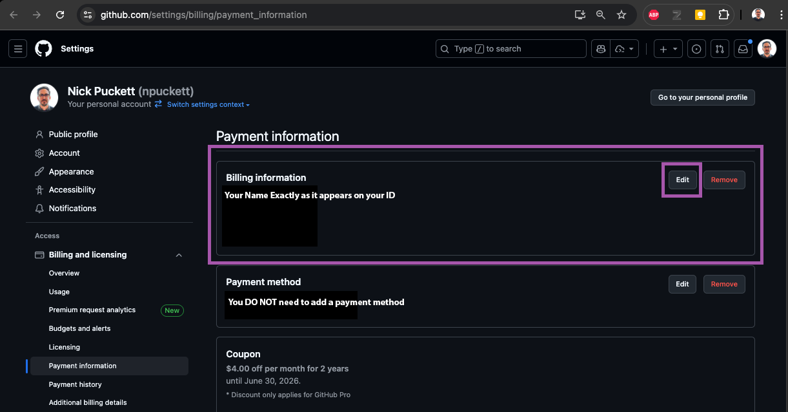
2025 captureOnly the name in Billing information matters. Leave the payment method empty.
Choose Student. Select OCAD University and your OCAD U email.
For proof, take a new photo of your student ID with your camera when the form asks. A live photo is approved more often than an uploaded file. Your name, the school name and a date must be readable.
Click Submit application.
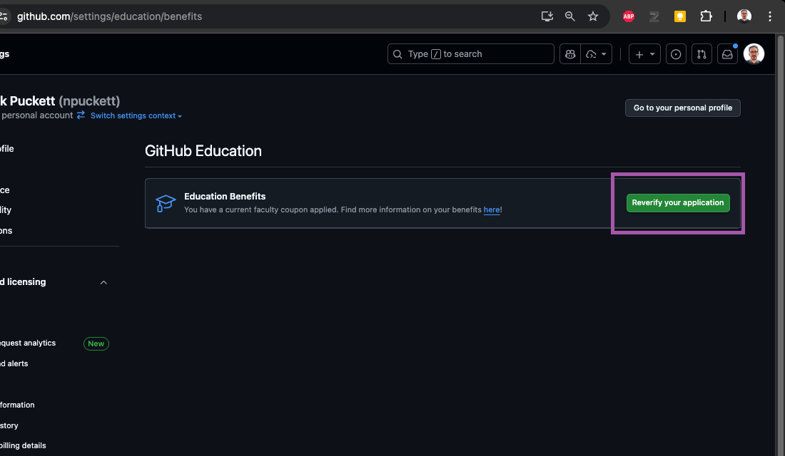
2025 captureThe Education benefits page. The button wording has changed since this was taken.
Switch on Copilot Student once you are approved
GitHub emails you when you are approved. Being approved and getting Copilot Student are two separate things. The benefits can take a few more days to apply, and you then switch Copilot on yourself.
Check Settings, Copilot. It should name your plan as Copilot Student.
Restart VS Code so it picks up the new plan.
GitHub CLI
gh is GitHub as a Terminal command. You do not need it for anything in the core setup. It becomes useful when a coding agent runs in a Terminal outside VS Code, because signing in with gh lets that agent push to GitHub as you.
Optional
About 10 minutes
Install Git first
Install it
If you have Homebrew, run this in the Terminal.
brew install gh
If you do not have Homebrew, download the macOS installer from cli.github.com. macOS may block it the first time. Open System Settings, then Privacy & Security, scroll down and click Open Anyway.
Run this in the Terminal. Then close VS Code and open it again.
winget install --id GitHub.cli --source winget
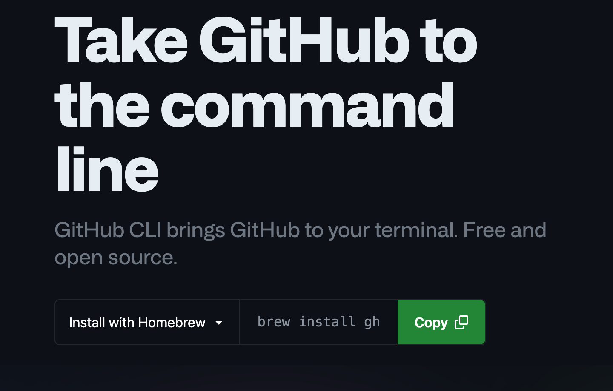
cli.github.com has installers for every system.
Sign in
Run the command below. It asks a few questions. Use the arrow keys and Enter to answer.
gh auth login
Question
Answer
Where do you use GitHub?
GitHub.com
Preferred protocol
HTTPS
Authenticate Git with your GitHub credentials?
Yes. This is the part that lets agents push.
How would you like to authenticate?
Login with a web browser
It shows a short code. Copy it and press Enter. Your browser opens.
Paste the code, check the username, and click Authorize github.
Check it worked with the command below.
gh auth status
Start a new project in one go
These three commands do everything in part 7. They copy the template, clone it, and switch on Pages. Change my-next-sketch to your project's name. Run them one at a time from your Documents/GitHub folder, so the new project lands beside your others.
gh api -X POST "repos/{owner}/{repo}/pages" -f build_type=workflow
Then open the folder in VS Code with code . and carry on from part 8.
Test on your phone without publishing
Publishing takes about a minute per change. VS Code can also give your phone a temporary secure address straight to Live Server on your laptop, so a save shows up on the phone in a second. It is called port forwarding. It needs nothing installed.
Optional
About 5 minutes
Forward Live Server's port
Start Live Server and note the port number at the bottom right. It is usually 5500.
Open the bottom panel with View, then Terminal. Click the Ports tab.
Click Forward a Port, type 5500 and press Enter.
If VS Code asks to sign in with GitHub, click Allow.
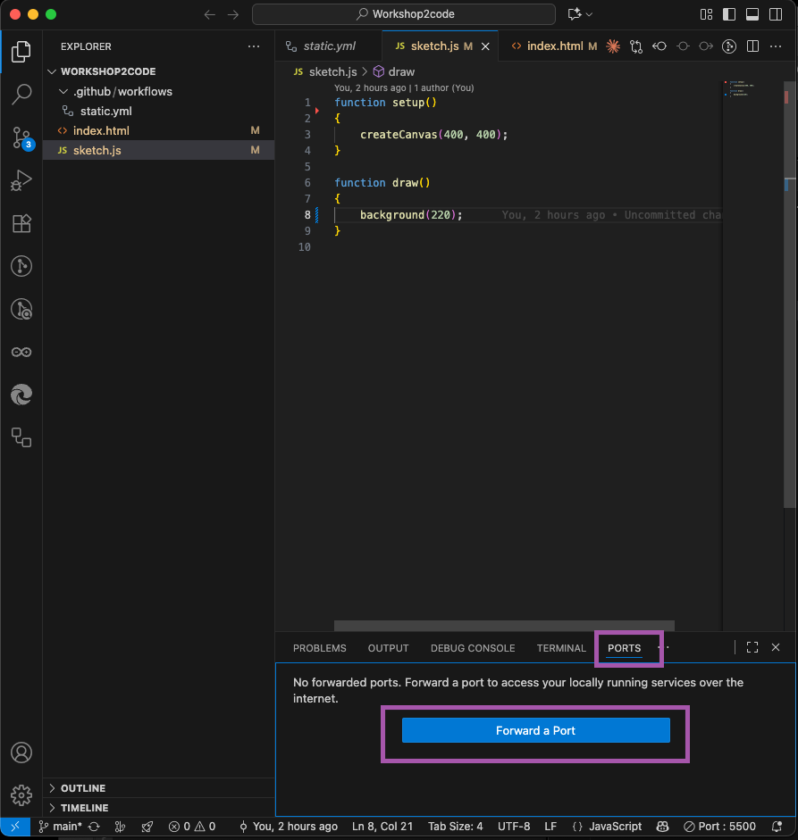
2025 captureThe Ports tab sits beside Terminal.
Make it public
A forwarded port starts out private, which means only you, signed in to GitHub, can open it. A phone is simpler with a public address.
Right-click the row for port 5500.
Choose Port Visibility, then Public.
VS Code warns you that anyone with the address can open it. Click Continue.
2025 captureRight-click the port to change its visibility.2025 capture
Open it on your phone
In the Ports tab, hover over the forwarded address and click the globe icon to open it in Chrome.
Make a QR code for it, as in part 9, and scan it with your phone.
The first visit shows a Microsoft page that asks you to confirm. Tap Continue.
2025 capture
Fix common problems
Find the message you are seeing in the list of steps. If yours is not here, copy the exact wording and bring it to class.
Source Control says Git is not installed
The panel shows a Download Git button instead of your files. Do part 5. Then close VS Code completely and open it again. VS Code only looks for Git when it starts.
"Make sure you configure your user.name and user.email in git"
Git does not know who you are yet. Open GitHub Desktop, go to its settings, choose Git, and fill in your name and email. Or use the two commands in Check Git knows who you are. Then click Commit again.
My github.io address shows a 404 page
Check the address. It needs your exact username and your exact repo name. Capital letters matter in the repo name.
Check Settings, then Pages. The source must be GitHub Actions.
Check the Actions tab. The newest run needs a green tick. If it has a red X, open it and click Re-run all jobs.
Check the repo is Public. It says so beside the repo's name.
A brand new site can take a few minutes to appear the first time.
Sync fails, or the push is rejected
This happens when GitHub has a change your laptop does not, for example if you edited a file on github.com. Click Sync Changes again. Sync pulls before it pushes, which usually fixes it. If VS Code reports a merge conflict, stop there and ask for help. Your work is safe.
VS Code is signed in as the wrong person
Click Accounts, then the username, then Sign Out. Before you sign in again, open github.com in your browser and check which account is signed in there. VS Code connects to whichever account the browser is using.
The browser never returns to VS Code after I approve
Your browser blocked the link that opens VS Code. Look for a small prompt near the address bar asking to open Visual Studio Code, and allow it. If there is none, go back to VS Code, cancel the sign-in, and start again. Chrome is the most reliable browser for this step.
Or no folder is open. Go Live only appears when a project folder is open, not a single file.
Or the window is in Restricted Mode. Look for a bar across the top. See Trust the folder.
Live Server shows a different project, or will not start
Another VS Code window is already using port 5500. Find that window, click Port: 5500 in its bottom bar to stop it, then click Go Live in the window you want.
My sketch uses motion, but tilting the phone does nothing
Tap the screen once. Phones only give a page motion data after a tap and your permission.
The address must start with https. Your github.io address does.
On an iPhone, if you tapped Deny earlier, close the tab completely and open the page again to be asked once more.
Windows says "running scripts is disabled on this system"
You typed a command such as npx or npm in the VS Code Terminal on Windows. That Terminal is PowerShell. By default, PowerShell refuses to run the small script files that Node.js uses for these commands.
Quick fix for one command. Add .cmd to the command name. For example npx.cmd ocadu-vscode-setup@2 or npm.cmd install.
Fix it for good. Run this once in the Terminal. It lets PowerShell run scripts you created on your own computer, and scripts from the internet only if they are signed. It only changes the setting for your Windows account.
If it asks you to confirm, type Y and press Enter. Then close the Terminal, open a new one, and run your command again.
Or use Command Prompt instead of PowerShell. In the Terminal panel, click the small arrow next to the + and choose Command Prompt. Plain npx works there.
The Terminal says "code" is not found
Inside VS Code's own Terminal, code always works. In a separate Terminal app it needs one more step.
Open the Command Palette, type Shell Command: Install 'code' command in PATH and press Enter.
Close every Terminal window and open a new one. If it still fails, run the VS Code installer again and leave Add to PATH ticked.
OCAD University · Digital Futures. Screenshots show VS Code 1.138, September 2026. VS Code updates every week, so a button may move or be reworded. If something here no longer matches what you see, tell your instructor.